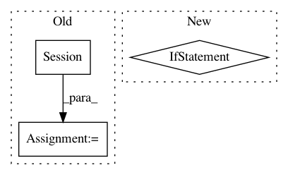

69d9220f450db20ce2e43a7c7f095b4d891565cc,tensorlayer/utils.py,,set_gpu_fraction,#Any#,634
Before Change
tl.logging.info("[TL]: GPU MEM Fraction %f" % gpu_fraction)
gpu_options = tf.GPUOptions(per_process_gpu_memory_fraction=gpu_fraction)
sess = tf.Session(config=tf.ConfigProto(gpu_options=gpu_options))
return sess
After Change
tl.logging.info("[TL]: GPU MEM Fraction %f" % gpu_fraction)
if gpu_fraction is None:
tf.config.gpu.set_per_process_memory_growth()
else:
tf.config.gpu.set_per_process_memory_fraction(0.4)
// gpu_options = tf.GPUOptions(per_process_gpu_memory_fraction=gpu_fraction)
// sess = tf.Session(config=tf.ConfigProto(gpu_options=gpu_options))
// return sess
def train_epoch(network, X, y, cost, train_op=tf.optimizers.Adam(learning_rate=0.0001),
acc=None, batch_size=100, shuffle=True):
Training a given non time-series network by the given cost function, training data, batch_size etc.
for one epoch.
In pattern: SUPERPATTERN
Frequency: 3
Non-data size: 3
Instances
Project Name: tensorlayer/tensorlayer
Commit Name: 69d9220f450db20ce2e43a7c7f095b4d891565cc
Time: 2019-04-17
Author: rundi_wu@pku.edu.cn
File Name: tensorlayer/utils.py
Class Name:
Method Name: set_gpu_fraction
Project Name: keras-team/autokeras
Commit Name: f4503bb3a3be014b452f54d8e2d187bb6419f627
Time: 2018-08-01
Author: jhfjhfj1@gmail.com
File Name: autokeras/classifier.py
Class Name: ImageClassifier
Method Name: predict
Project Name: tensorlayer/tensorlayer
Commit Name: a6652b0c1997bb47dd502bf674e0b3b9b2d09d23
Time: 2019-05-16
Author: 1402434478@qq.com
File Name: examples/reinforcement_learning/tutorial_bipedalwalker_a3c_continuous_action.py
Class Name:
Method Name: